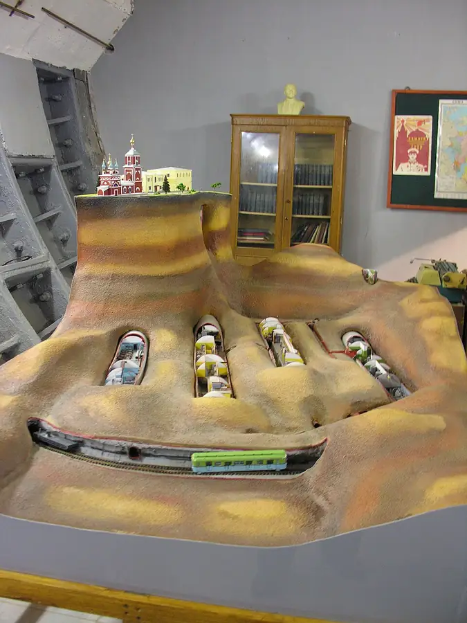

Фото: Fastboy, CC BY-SA 3.0 · Wikimedia Commons
Музей и ресторан под землёй · ЦАО
Бункер-42
Секретный бункер холодной войны на глубине 65 метров у Таганки: экскурсии и ресторан.
- ₽₽ · 1 500–3 000 ₽ на человека
- в 2 планах
Позвать сюда: Бункер-42Открыть в каталоге: Бункер-42Маршрут до места: Бункер-42
Адрес и детали
- Адрес
- 5-й Котельнический пер., 11
Открыть на Яндекс Картах (в новой вкладке) - Метро
- м. Таганская
- Округ
- Центр (ЦАО)
- Цена
- 1 500–3 000 ₽ на человека
- Часы работы
- пн–вс 10:00–21:00 · проверили в октябре 2026
- Телефон
- +7 (499) 703-44-55
- Проверено
- работает — проверили в октябре 2026
Планы с этим местом 2
- Бункер-42 · Музей и ресторан под землёй · м. Таганская
- 9 минут пешкомRestaurant by Deep Fried Friends · Ресторан-бар
Экскурсия в секретный бункер холодной войны на глубине 65 метров, а потом бистро и коктейльный паб в Deep Fried Friends в девяти минутах пешком.
Открыть план: Бункер холодной войныПозвать сюда: Бункер холодной войны
Фото: Fastboy, CC BY-SA 3.0 · Wikimedia Commons
- Бункер-42 · Музей и ресторан под землёй · м. Таганская
Секретный бункер холодной войны на глубине 65 метров у Таганки: сначала экскурсия, потом ужин в ресторане прямо под землёй.
Открыть план: Свидание на глубине 65 метровПозвать сюда: Свидание на глубине 65 метров
Фото: Fastboy, CC BY-SA 3.0 · Wikimedia Commons

Входит в подборки
Похожие рядом
Что ещё рядом

Как позвать
- Выбери план, место или событие — в карточке адрес, цены и маршрут в Яндекс Картах.
- Нажми «Позвать сюда» — соберётся приглашение-игра для свидания или голосование для компании.
- Отправь ссылку в любой мессенджер: тебе ответят, а компания отметит, куда и когда может. Бесплатно и без регистрации.